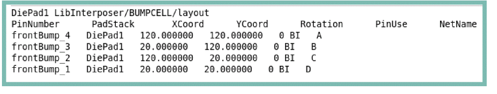
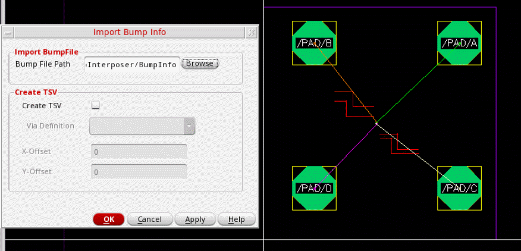

Creating Bumps from File
Virtuoso Stacked Silicon solution supports the creation of reusable bump files. You can use these bump files, which are in text format, to generate similar bumps in different dies. Bump files follow a specific format. The following image displays a sample bump file.

To create bumps from a bump file:
-
With the container or package layout open, launch the Edit-In-Concert mode by selecting Module – Edit-In-Concert.
The package design is displayed on the first tab, and the layouts of the die instances in the package are displayed on separate tabs. - Click the tab on which bumps are to be generated.
- Choose Module – Bump Management – Create Bumps – From File. The Import Bump Info form is displayed.
- Specify the path to the bump file in the Bump File Path field or click Browse to select the file.
- Select Create TSV to create a TSV.
-
Select a via from the Via Definition cyclic field, which lists all the standard and custom vias that are defined in the technology file.
- Specify the X and Y offsets for the TSVs. These values define the offset from the center of each TSV to the center of the corresponding bump.
- Click OK.
Bumps and TSVs as per your specifications are created.
If the net names are listed in the bump file, the created bumps are also assigned appropriate connectivity.

Related Topics
- Import Bump Info Form (form reference)
Inter-Die Operations
After you finalize the bumps for a die layout, switch to the package or container tab in the Edit-In-Concert mode to run the following inter-die commands:
Related Topics
Fixing Bump Alignment Violations
Return to top